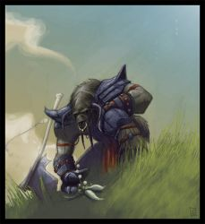

Joué par :
Chiron Joué par :
[ Information masquée ] Age : Très Jeune
Lieu de naisance : Mulgore
Signe de naissance : Gorille
Sexe : Homme
Race : Tauren
Faction : Horde
Formation : Guerrier
Niveau : 60
Guilde : Totems du disque haut (les) Artisanat 1 : Forgeron
Artisanat 2 : Mineur
Description : Chantelame est un Guerrier Tauren, au caractère très innapproprié a sa condition : timide et réservé, gentil comme tout, curieux de plein de choses mais particulièrement peu futé, et surtout hypersensible. Terrifié par les mots de plus de 3 syllabes, les phrases trop longues, les hauteurs, les grottes sombres et les araignées, il fait pourtant preuve dans toute autre circonstance d'un courage et d'une volonté sans pareille.
Il est très jeune, et insouciant, se considère encore comme un Veau même si ses amis cherchent a lui prouver qu'il est un Taureau maintenant.
Ère du Conflit [1]
Lune de la Force [1]
Décade du Panda
Décade du Gorille [1]
Le Premier Chant - Genèse
Genèse.
Chantelame est né dans les plaines de Mulgore.
La vie d'un jeune veau fut pour lui la première et la plus complète des merveilles : il ne devait plus jamais pouvoir oublier ces délicieux moments passés a brouter les champs a perte de vue, a paresser au soleil, a se rouler dans les flaques de boues avec les autres veaux et vachettes, et à dormir le reste du temps.
Année après année, il grandi, et ses amis aussi, mais il était peut être l'un des seuls a n'avoir absolument aucune envie de voyage, de nouveauté. Combiné a sa paresse qui ne faisait que croître, il vi ses amis partir peu a peu pour des terres lointaines, après avoir passé de longs moments à l'école des Taurens afin de se découvrir une voie, un but.
Il n'avait absolument aucune qualité.
Il était trop bête pour comprendre ce qu'enseignaient les Maîtres aux jeunes Veaux. Trop flemmard pour faire autre chose que flâner dans les champs. Trop insouciant pour prendre note des terribles histoires que racontaient les Ancêtres du Village.
Rien ne l'intéressait, a vrai dire. Il était heureux, pourquoi changer?
C'est a peine si les sarcasmes des autres veaux, et le déséspoir des vieux du village l'atteignaient. Tout juste si il s'en rendait compte. Le soleil brillait, l'herbe était grasse et verte, savoureuse, juteuse.
Au final, les gens avaient fini par s'accomoder de lui - il ne faisait de mal a personne, et aidait quand même quelque fois... quand l'occasion lui tombait dessus.
L'histoire pourrait se terminer ici, mais (et comme dans beaucoup d'histoires, ce "mais" est justement, avec le recul, la raison de tout son chemin) une nuit...
... alors qu'il dormait, la joue collée contre le tronc de l'arbre proche du puit du village, ronflant bruyamment d'une journée passée a ne rien faire, deux formes se faufillèrent vers la place du village. Des couinements le tirèrent peu a peu du sommeil, et comme il entendait le bruit d'une agitation inquiétante, il s'était levé pour assister à uen scène qui devait rester gravée en sa mémoire :
Les Vieux du Village étaient rassemblés autour du four a pain, penchés sur un paquetage d'où provenaient les dits couinements, et faisaient feu de forces paroles et débats. Les Gardes affollés faisaient le tour de la place, guettant les Ombres attenantes.
Une petite Taurenne au pelage blanc avait été déposée au village par deux formes inconnues - c'est ce qu'il compris en entendant les gardes parler. Les Maîtres du Village prirent la décision de ne pas lancer de chasse, même si certains disaient avoir vu des ennemis dans les formes venues discrètement déposer cet étrange présent. Chantelame était un peu dépassé par toutes ces grandes discutions, et son effort pour comprendre ce qu'il se passait l'avait tellement fatigué qu'il se rendormi,non sans avoir jetté un oeil sur la petite forme nichée dans son panier.
La petite Taurenne portait comme seul signe de reconnaissance un pendentif, en cuir usé, sur une face duquel était schématisée une Griffe, et au verso deux mots, écrits dans une langue inconnue.
"Thero'Sha".
Les anciens supposèrent que c'était son nom, et la nommérent ainsi.
Quelques années passèrent encore au village, où Chantelame continuait d'explorer les tréfonds de sa profonde incapacité a se rendre utile sans provoquer ni catastrophe de par sa maladresse, ni colère de ses pairs de par sa simplicité d'esprit, parfois lourde à supporter.
Il passait beaucoup de temps avec la petite Thero'Sha, qui nourrisait une profonde affection pour les plantes et les longues promenades dans Mulgore, pour la première fois il sympathisait vraiment avec quelqu'un, et se sentait capable de rester avec elle sans se morfondre au sujet de ses nombreux défauts.
Chaque année, les Maîtres du Village prenaient de nouveaux apprentis, et leur enseignait les secrets qu'ils devaient connaître pour devenir des Taureaux, ou des Vaches, dignes de ce nom, et partir faire leur vie où ils le souhaitaient. Cela faisait déjà 3 ans que Chantelame évitait cette réunion rituelle, par manque d'intérêt, d'une part (pourquoi vouloir quitter le lieu où l'herbe est la meilleure?), par timidité d'autre part, et par paresse enfin.
L'année vint où Thero'Sha dû participer au rituel de passage, comme l'appelaient les Anciens, et choisir sa voie.
Ce jour là, elle parvint a ammener Chantelame au village lors du rassemblement des Veaux, et il ne put faire demi tour de peur de subir la punition des Anciens, alors il s'assit dans le cercle, a côté de Thero'Sha, et écouta les Maîtres parler des lieux au delà des montagnes, raconter des histoires terribles sur des démons qui étaient venus détruire la Terre des années auparavent, et qui avaient été repoussés, conter, enfin, l'histoire d'un Orc devenu chef de guerre, et de comment le Père des Taurens, Cairne Bloodhoof, lui avait juré allégeance pour offrir à son peuple une chance de continuer a faire ce que Chantelame faisait depuis qu'il était né : brouter paresseusement dans l'insouciance.
Chantelame aimait déjà beaucoup les Histoires. Celle ci le captiva tellement qu'il resta tout du long suspendu aux mots du Maître des Chamans qui la contait.
Ce dernier expliqua ce qu'étaient les choses, alors, les dangers menaçant la Horde, les attaques de l'alliance, enfin de certains d'entre eux, le fragile équilibre que tentaient de maintenir Druides et Chamans, et aussi les plus sombres menaces planant sur Azeroth.
Lorsqu'il commenca a parler de ce qui se passerait si les démons devaient revenir, il eut le malheur de prendre le mauvais exemple : il décrivit une scène apocalyptique dans laquelle des Hordes de créatures de flammes déferlaient sur Mulgore, tuant les animaux, assombrissant le ciel ...
... et surtout brûlant toute l'herbe a perte de vue.
Chantelame mis quelques secondes a former dans son esprit l'image décrite par le Maître, mais ce qu'il vît alors assura au Maître qu'il aurait du éviter un tel exemple : le veau se mit a pleurer a chaudes larmes, tremblant de terreur, et maudissant le Chaman de raconter des histoires aussi horribles pour faire peur aux Taurens, il était recroquevillé, les mains autour de ses jambes serrées contre lui, frissonnant et pleurant les larmes de son corps.
Thero'Sha tentait tant bien que mal de le rassurer, et fut tellement patiente et gentille qu'elle réussi a le consoler, faisant cesser ses larmes de crocodile le temps pour le Maître hagard de réussir a ouvrir son histoire sur comment empécher tout cela. Chantelame lui en voulait tellement de l'avoir fait pleurer qu'il boudait résolument, serrant la patte de la Taurenne entre ses sabots, mais sans vouloir partir pour autant.
Alors, les Maîtres expliquèrent que chaque veau et vachette devaient aider Cairne a protéger les Orcs qui protégaient la paix. Ils dirent que chacun avait reçu de ses ancêtres une force, une destinée particulière, et qu'il appartenait a chacun de la découvrir et de l'explorer pour la mettre au service des autres, et faire en sorte qu'un jour tous puissent revenir vivre une vie paisaible a Mulgore.
Chantelame buvait ces paroles, galvanisé par la redescente de son chagrin.
Les Anciens déclarèrent alors la semaine initiatique, où chaque jour les Maîtres feraient classe aux veaux et vachettes, pour les aider a découvrir le legs des Ancêtres.
Dans ce village, la tradition voulait qu'on nomme les jeunes Taurens rapidement, selon les premières choses qu'ils faisaient, ou leur caractère. Chantelame n'avait jamais reçu de nom. Les autres se referraient a lui comme "le flemmard", et ne l'aimaient décidemment pas beaucoup.
Poussé par Thero'Sha, chaque jour il assistait avec elle aux classes, sans jamais ni s'intéresser réellement a ce qui était dit, ni aux essais des petits Taurens face au Maître en question. Il se faisait tout petit, car Thero'Sha voulait tout apprendre, et qu'il ne voulait pas la géner. Il s'ennuyait profondément.
Un jour, ce fut le Maître des Guerriers qui fit classe.
Il raconta des histoires fantastiques, des histoires de héros, des histoires très tristes, aussi, de princesses sauvées, de Guerriers morts pour protéger les leurs, et garder l'herbe verte pour tous. Chantelame, bien sûr, fondit en larmes en écoutant cela, et Thero'Sha le serra contre elle pour le réconforter, alors qu'il écoutait le Maître en tremblottant. Les autres veaux qui étaient là étaient ceux qui n'avait pas encore été choisis par un autre Maître pour parfaire leur apprentissage. Ils lui lancaient des regards noirs, et se moquaient doucement de ses larmes face à une simple histoire.
Haruul Runetotem, car c'était le nom de ce Maître Guerrier, raconta alors comment certains Guerriers avaient permis de repousser les assauts des tranchecrins, des démons, ou des légions du fléau. Il parla de l'Art du Combat, du rôle des Guerriers dans la Horde. Il parla de ses voyages, des vies qu'il avait sauvé au péril de la sienne, de ses blessures, enfin, et de sa retraite au village, pour protéger et entrainer les jeunes Taurens, avant de finir sa vie paisiblement, heureux d'avoir été au service des siens et d'avoir permis a la Vie de continuer son chemin, doucement.
Chantelame était captivé, complètement, par les mots du tauren aux cornes cassées.
Lorsqu'il s'en rendit compte, Haruul se tourna vers lui, et lui demanda de se lever et de venir au centre du cercle.
Chantelame se paralysa, les larmes montant aux yeux, il s'apprétait a partir en courrant, terrorisé, mais Thero'Sha l'encouragea doucement à y aller, lui disant que personne se moquerait de lui, qu'elle y veillerait.
Alors le veau se leva et s'avanca, hésitant, au centre de la place. Il essaya de demander au Maître de le laisser, qu'il était pas là, qu'il avait rien fait, que c'était pas juste.
Mais Haruul le regardait tranquillement, un sourire aux lèvres, et lui dit qu'il avait besoin de lui, pour montrer aux autres des passes d'armes, et qu'il pourrait partir après. Le vieux tauren saisit un paquetage et en sorti une vieille hache rouillée et une épée, des boucliers en bois et quelques autres babioles.
Il tendit une partie de l'attirail a Chantelame, qui le regardait, hagard, placer son épaulière et la serrer, fixer son bouclier a son bras et saisir sa hache pour la dresser vers la Lune, faisant briller la Lune sur la lame.
Il parla, alors, beaucoup, et montra comment se fendre, comment parer, comment taper... Chantelame tenait son épée et son bouclier, et tentait de faire au mieux de ce que Haruul demandait. Il était mis en confiance par la voix rauque et posée du Vieux Tauren, par le regard rassurant de Thero'Sha. Il avait oublié le cercle de Veaux le regardant suspicieusement.
Le cours avancait doucement, avec le pauvre veau timide servant de démonstration au Maître qui s'amusait beaucoup, secrètement, de ses attitudes sur la défensive.
Il expliqua alors a Chantelame comment bien tenir son épée, et lui demanda alors de passer attaquant. Nul besoin de préciser a quel point le vertige saisi alors le veau, qui rougi et se paralysa a nouveau de frayeur. Mais cette fois ci, le regard du vieux Maître ne le quittait pas, et sa voix continuait a couler, lentement, pour lui décrire ce qu'il devait faire.
Finalement, il repris assez d'assurance pour s'éxecuter, et se déplaça là où devait commencer sa passe d'armes. Sa prise sur la poignée était maladroite, il se sentait penaud, et tremblait de tous ses poils.
Le Maître se fendit, bouclier levé, et fit signe au Petit Tauren de s'éxecuter.
Ce dernier avanca alors d'un pas, tentant du mieux qu'il pouvait de correctement suivre ce que le Maître avait dit. Il porta son poids sur sa jambe gauche, bouclier légèrement levé, et commenca a porter des attaques hésitantes. Haruul déviait chaque frappe, ponctuant ses parades par de petites tapes rapides du plat de la lame sur les jambes ou le ventre de Chantelame, le piquant, le titillant, en dansant autour de lui. Il continuait a lui parler, tout du long, si bien que Chantelame en oublia que c'était une classe, et qu'il n'était pas seul, avec ce maître en train de le tourner en bourrique et les autres effondrés de rire devant sa maladresse.
Chantelame continuait a suivre , amusé, le Maître, fasciné par son aisance, par la dextérité extrème avec laquelle sa lame faisait précisèmment ce qu'il voulait. Il observait ses mouvements, comprennait ses placements, ses déséquilibres.. Sa grande endurance lui épargnait la fatigue naissant dans ses membres peu habitués a l'exercice, mais peu à peu, le jeu s'insinuait en lui, un sourire avait naquis sur ses lèvres.
Un déséquilibre de son Maître, pendant une des feintes, déclencha en lui un accès brusque d'adrénaline, il lanca son épée dans la direction du Tauren pour passer sa garde, ce a quoi le Maître répliqua par une rotation rapide et une contre attaque fulgurante qui tapa le bouclier.
Le Veau se senti alors plein d'une rage incompréhensible, piqué par son échec, et commenca une série d'attaques, du bout du bras, qui allaient en s'accélérant, peu à peu.
Un long sifflement s'éleva alors lentement dans la clairière, un chant métallique aux résonnances profondes, le bruit de l'épée du jeune tauren qui fendait l'air de plus en plus vite, brillant sous la lumière de la lune, jusqu'à devenir un chant strident et continu, ponctué par le fracas du métal sur le bois du bouclier, une mélopée cinglante frappée d'éclats de cymbales métalliques a chaque impact de la lame.
Le veau tourbillonait sur lui même, attaquant sans cesse le Maître, sous tous les angles, inconscient même de ses propres mouvements, absorbé dans le regard noir et profond qui le fixait depuis il ne savait déjà plus combien de temps, et le sourire qui faisait surface sur le visage ridé comme il voyait le veau se découvrir sans savoir son héritage, son legs, ce pour quoi les Ancêtres l'avaient destiné, et qui prenait vie dans le Chant mélodieux de l'épée tenue dans sa main maladroite qui sifflait, sifflait.
La lame chanta encore quelques secondes, puis le Maître, avec un revers de poignet rapide et d'une aisance déconcertante, désarma le tauren en un éclair, comme il s'apprétait a abattre son épée une nouvelle fois sur le bouclier de son adversaire.
Le claquement du métal arracha un petit cri a Chantelame, qui repris soudainement contact avec la réalité.
Il contempla l'épée tourner dans l'air, de manière fulgurante, libérée de la prise de Chantelame, et dont la plainte lancinante du métal chantant s'atténuait peu a peu, jusqu'à ce qu'elle vint se ficher en vibrant dans le sol, face au tauren abasourdi.
Le long sifflement se dissippa alors en une légère vibration, rendant aux plaines de Mulgore leur calme silencieux des nuits de Lune Claire.
Personne ne parlait.
Chantelame était en sueur, les yeux écarquillés, le coeur battant, avec dans les oreilles le bruit du combat qui claquait dans sa tête, encore.
Haruul Runetotem lança alors un regard circulaire aux Taurens assis là, s'attardant quelques temps sur Thero'Sha a qui il sourit, puis se retourna vers le veau qu'il avait face a lui, bras ballants, comme honteux.
Un large sourire illumina son visage buriné.
Il avanca, après avoir posé sa hache au sol, et mis sa main sur l'épaule de l'élève maladroit.
"Jeune tauren. Cette Nuit, les Ancêtres t'ont révélé ton héritage. Que plus jamais quiconque ne dise de toi que tu es un incapable, car tu sais désormais ce pour quoi tu es né."
Haruul regarda encore les taurens assis, bouches bées.
"En tant qu'Ancien du Village, et Maître des Guerriers, je te prends en apprentissage, que tu le veuille ou non, jeune veau.
Tu deviendras Guerrier, et désormais l'on te nommera Chantelame, car le chant de ton épée portera la terreur dans le Coeur de tes ennemis, et l'espoir dans celui de ceux que tu choisis de protèger."
Haruul mena alors Chantelame, abasourdi, épuisé, exalté de bonheur, porteur d'un nom, enfin, jusqu'au bord du cercle, et le confia a Thero'Sha.
Il lui murmura de prendre soin de lui, qu'il devait se reposer.
Il sourit a la taurenne qui s'inclina respectueusement.
"Demain, jeune vachette, ce sera a toi de découvrir ton propre destin. Je sais déjà que je ne pourrais rien t'apprendre. Prends soin de ton ami, une nouvelle vie commence pour lui. Je vais terminer la classe avec les autres, allez vous promener."
Les deux petits s'éloignèrent alors, Chantelame tout penaud, sur un nuage, titubant de fatigue.
Il s'endormit contre un arbre, avec son amie, et pour la première fois depuis qu'il était né, il avait la sensation d'être. Les perspectives de penser a l'avenir, son imagination qui se réveillait subitement, le souvenir de ce combat haletant, de l'adrénaline dans ses veines, du long chant, enfin, de son épée, qu'il n'entendit vraiment que lorsqu'il s'arrêta...
... et l'honneur, immense, la joie, sans limites, de recevoir son nom, l'expression de ce qu'il était, de s'être découvert... un talent. Un but. Un devenir.
Il s'endormit, paisible, heureux, en murmurant ce mot doucement, la voix tremblante d'émotion, pour s'en bercer :
"Chantelame... Chantelame.."
Et Thero'sha le répétait avec lui, souriante :
"Oui, Chantelame, oui, c est toi, petit grand tauren. Celui qui fait chanter le métal des épées...